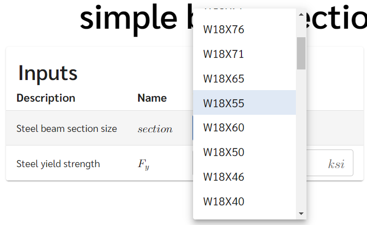
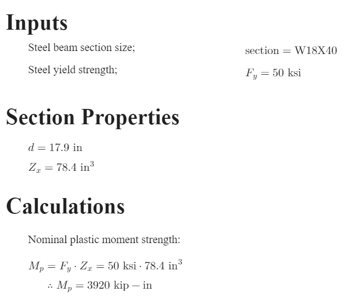
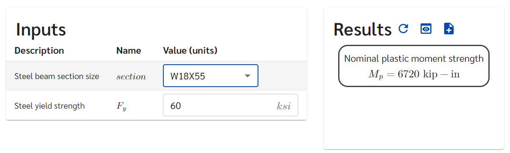
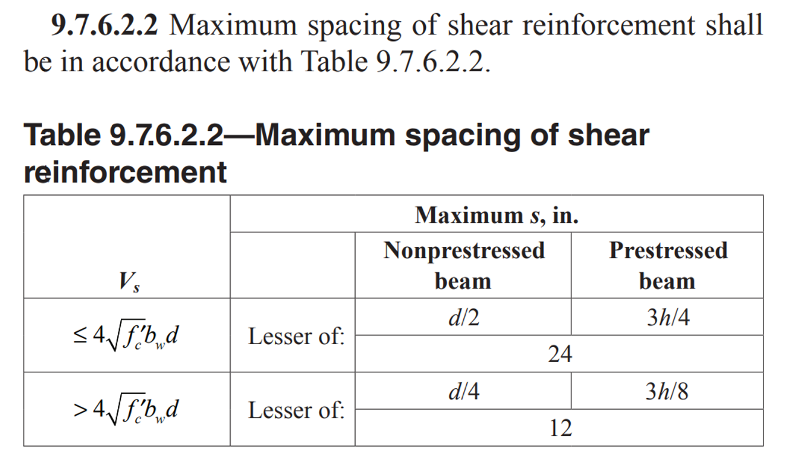
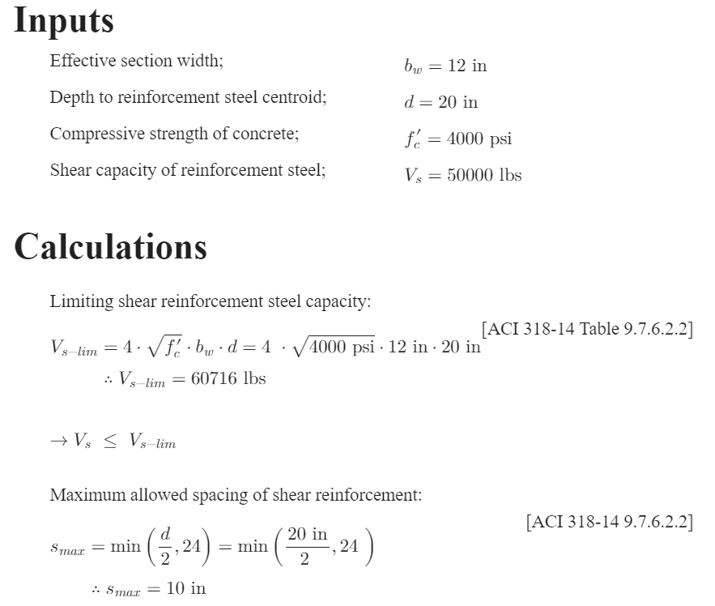
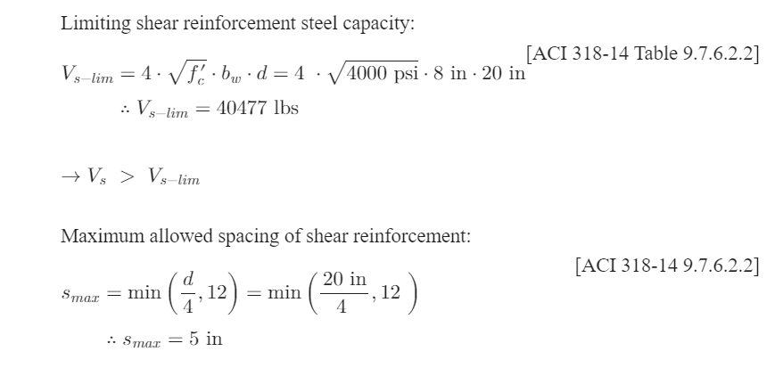
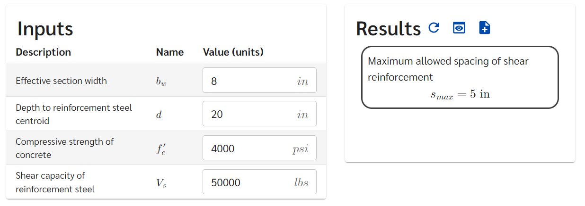

Next Steps: Superpowered Features
These are some of efficalc’s features that will take your calculations to the next level.
These short examples will take you through some of some of efficalc’s features that will take your calculations to the next level. If this is your first time on the site, take a look at Getting Started - An introductory walk through for the basics of creating efficalc templates.
- These example will break down
Efficalc provided section properties
Conditional logic with if/else statements
Design checks using
Comparison
Using efficalc provided section properties
Note
This example will be using the section properties provided in the open-source efficalc library. For more information about the types of sections available, check out https://youandvern.github.io/efficalc/section_properties.html
This example calculation will be a simple wide flange beam design for someone trying to find the optimal section size for their beam. By using the provided section properties, we can easily select different sections we want to try in the design portal:
Step-By-Step
There are three simple set up steps for selecting and using sections in a template:
Get the size options
Create a selector input
Get section properties from the selected option
We can use the list of available sizes that is imported from efficalc.sections:
ALL_AISC_WIDE_FLANGE_NAMES
Then we can create a selector input named “section” with our sizes:
section = Input("section", "W18X40", input_type="select", select_options=ALL_AISC_WIDE_FLANGE_NAMES)
Finally, to get a specific section property we take two steps:
Get all properties for the selected section:
section_properties = get_aisc_wide_flange(section.get_value())Place each required property in a Calculation object:
d = Calculation("d", section_properties.d, "in")
Zx = Calculation("Z_x", section_properties.Zx, "in^3")
Now, anytime you choose a section, the right property will be used in the calculations. Whenever we need to reference the property, we can use it just like any variable:
Mp = Calculation("M_p", Fy * Zx, "kip-in")
Note
For steel wide flange sections, efficalc has over 350 options to choose from. Instead of providing all options to the selector input, you can provide (1) your own list of sizes or (2) a sub-list of all sizes
["W18X40", "W18X46", "W18X50"]
relevant_sizes = ALL_AISC_WIDE_FLANGE_NAMES[150:200]
Putting this together with some headings and descriptions, we will have:
Complete Code
1from efficalc import * 2from efficalc.sections import * 3 4def calculation(): 5 6 Heading("Inputs", numbered=False) 7 section = Input("section", "W18X40", input_type="select", select_options=ALL_AISC_WIDE_FLANGE_NAMES[150:200], description="Steel beam section size") 8 Fy = Input("F_y", 50, "ksi", "Steel yield strength") 9 10 Heading("Section Properties", numbered=False) 11 section_properties = get_aisc_wide_flange(section.get_value()) 12 d = Calculation("d", section_properties.d, "in") 13 Zx = Calculation("Z_x", section_properties.Zx, "in^3") 14 15 Heading("Calculations", numbered=False) 16 Mp = Calculation("M_p", Fy * Zx, "kip-in", "Nominal plastic moment strength", result_check=True)
Calculation Report
Design Portal
Using if/else statements for conditional calculations
Often in codified calculations, some design equations will only be applicable under specific conditions. This is an ideal scenario for using conditional logic and if/else statements. Efficalc is designed to support conditional rendering of calculations in your calculation reports or design interface.
For example, ACI 318-14 section 9.7.6.2.2 has different requirements for the maximum spacing of shear reinforcement depending on the proportion of steel reinforcement strength (Vs) vs limiting stel reinforcement strength based on concrete section strength (Vs-lim):
if Vs \(\leq\) Vs-lim then use the lesser of d/2 or 24 inches
otherwise use the lesser of d/4 or 12 inches
Step-By-Step
Conditional logic in efficalc uses native python syntax. Calculations in conditional blocks are only rendered in the design portal and calculation reports when they are in the executed branch. In the reinforcement steel example above, we want to display the constant limit as 24 inches OR 12 inches; not both.
First we calculate Vs-lim according to table 9.7.6.2.2
Vs_lim = Calculation('V_{s-lim}', 4 * sqrt(fc) * bw * d, "lbs")
Then we can handle the conditional check. To compare variables (Input, Calculation, etc.) in a python if statement, we can get the
value using the .get_value() method. This gets the value of the variable in a number that can also be compared with plain
numbers (i.e. 2, 0.34, etc.), not just variables.
if Vs.get_value() <= Vs_lim.get_value():
Then if this statement is true, we want the maximum allowed reinforcement spacing to be the lesser of d/2 and 24:
Calculation('s_{max}', minimum(d / 2, 24), "in")
To handle the case where the above check is not true and we should use the lesser of d/4 and 12, we can add an else block with:
Calculation('s_{max}', minimum(d / 4, 12), "in")
Putting this together with some headings, comparison text, and descriptions, we will have:
Complete Code
1from efficalc import * 2 3def calculation(): 4 5 Heading("Inputs", numbered=False) 6 bw = Input('b_w', 12, 'in', 'Effective section width') 7 d = Input('d', 20, 'in', 'Depth to reinforcement steel centroid') 8 fc = Input("f'_c", 4000, 'psi', 'Compressive strength of concrete') 9 Vs = Input("V_s", 50000, "lbs", "Shear capacity of reinforcement steel") 10 11 Heading("Calculations", numbered=False) 12 Vs_lim = Calculation('V_{s-lim}', 4 * sqrt(fc) * bw * d, "lbs", 'Limiting shear reinforcement steel capacity', reference="ACI 318-14 Table 9.7.6.2.2") 13 14 if Vs.get_value() <= Vs_lim.get_value(): 15 ComparisonStatement(Vs, "<=", Vs_lim) 16 Calculation('s_{max}', minimum(d / 2, 24), "in", "Maximum allowed spacing of shear reinforcement", reference="ACI 318-14 9.7.6.2.2", result_check=True) 17 18 else: 19 ComparisonStatement(Vs, ">", Vs_lim) 20 Calculation('s_{max}', minimum(d / 4, 12), "in", "Maximum allowed spacing of shear reinforcement", reference="ACI 318-14 9.7.6.2.2", result_check=True)
Calculation Report
Full report with the first conditional check true:
Calculations only with the first conditional check false (b reduced to 8 in):
Design Portal
Design checks using Comparison
Whether it’s a final result or mid-calculation, you may want to perform a design check to compare a calculation result against a target value. For example, you may want a clear display that let’s you know the capacity is less than the demand.
Efficalc’s Comparison object is designed to make design checks easy and useful. The design portal will highlight
your checks green or red depending on whether they are passing or failing with the current inputs. The calculation report
will also clearly display the check with variables, substituted values, and a customizable description.
Step-By-Step
The complete list of options for a Comparison object are given in Calculation Object Details and Calculation Object Examples. This example
will hightlight on basic usage with custom messages.
For a design check to confirm that the design moment strength is greater than the moment demand, we can add the following line after our calculation:
Comparison(Mu, "<=", PMn, true_message="Pass", false_message="Fail")
This will show a comparison of the variables Mu and PMn and the resulting true_message or false_message depending on the result.
Complete Code
1from efficalc import * 2 3 4def calculation(): 5 6 Heading("Inputs", numbered=False) 7 Zx = Input("Z_x", 82.3, "in^3", "Plastic section modulus of the beam") 8 Fy = Input("F_y", 50, "ksi", "Steel yield strength") 9 Mu = Input("M_u", 200, "kip-ft", "Beam moment demand") 10 P = Input("\phi", 0.9, "", "Flexural resistance factor") 11 12 Heading("Calculations", numbered=False) 13 Mp = Calculation("M_p", Fy * Zx / ft_to_in, "kip-ft", reference="AISC Eq. F2-1") 14 15 PMn = Calculation("\phi M_n", P * Mp, "kip-ft", "Design flexural strength of the section", result_check=True) 16 Comparison(Mu, "<=", PMn, true_message="Pass", false_message="Fail")